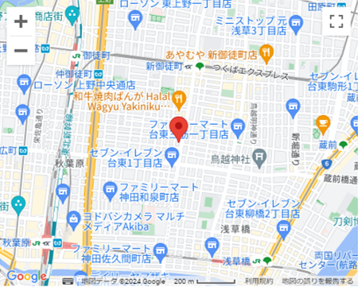

株式会社
サイバースペーステクノロジー
企業実習報告
会社
情報
会社名
株式会社サイバースペーステクノロジー
住所
東京都台東区台東2-18-8写光ビル7F
代表取締役社長
伊川 廣幸
(原文ママ)
JR
秋葉原駅中央改札口より14分秋葉原駅からのルート
御徒町駅南口2より11分御徒町駅からのルート
浅草橋駅東口より13分浅草橋駅からのルート
地下鉄
大江戸線新御徒町駅A2出口より5分新御徒町駅からのルート
日比谷線仲御徒町駅出口1より8分仲御徒町駅からのルート
銀座線末広町駅出口2より11分末広町駅からのルート
日比谷線秋葉原駅出口1より12分秋葉原駅からのルート
大江戸線蔵前駅A3出口より11分蔵前駅からのルート
銀座線稲荷町駅出口2より11分

アク
セス
社員紹介
（仮名です）
海老さん
A葉さん
ありがと茄子さん
社長
エビさん
ポリテクセンター茨城卒業生、2024年入社
ご自身も今年に入社されたにもかかわらず、私たちのことを親身に面倒を見てくださった。
エビさんが持っている仕事をこちらでも受け持つときに、詳細に話してくださった。
取手のホープ。口癖は「なんでしょう」
A葉さん
A葉さんの紹介 口癖「○○的の考えだと」
ありがと茄子さん
営業ができる開発部隊。
提案したことは必ずそれはいいねぇと言ってくださる。
提案内容や進捗状況の時に、問題提起をしていただき、具体的に前に進んでいる
口癖「それはいいねぇ」
社長
以前は自らも開発者エンジニアをされていた。
色柄物のシャツが似合っている。顔は濃いめ。
口癖「そうだねぇ」
実習からの感想
くまがい
実務に関わらせてもらう貴重な経験ができた。
週に数回ミーティングがあり、思っていたよりも和気あいあいとした雰囲気だった。
また、ときおり笑い声が聞こえる場面もあった。
専門知識がない立場からの意見も尊重され、結果的に機能や画面設計の改善に貢献できた。
そこから、専門知識が不足していても積極的に意見を述べることの重要性を学んだ。
自分の担当している作業について知ってもらわないと相談ができないことも多いので、時間との兼ね合いが大変だった。
対処として、自分で調べられる範囲は自分で調べておいて、選択肢を絞って質問することが重要だと感じた。
訓練校で学んだ内容の復習を行い、基礎を固めることが有益だと感じた。
緊張感があったことで、かえって真剣な気持ちで取り組むことができた。
通勤時間が長いため、電車の遅延を見越して早めに家を出る必要があり大変だった。
こぐれ
すでに開発中のアプリケーションの開発業務に携わらせていただいた。
要件定義の中で、「この機能を持つアプリケーションはどのような人々にニーズがあるか、欲するか？」を考えた。
もともと要件定義は存在したが、
実習として私たちも改めて考える時間を設けてくださった。
依頼されて作られているものではないので、
潜在的な市場を開発側で考える、企画会議も体験できた。
レイアウト担当した際に、この機能がどのプログラムにつながるか、
アプリのpostやgetを考えながら画面を作ると知ることができた。
今まではフロントエンドとバックエンドへの橋渡しについて、
自分で考えることがなかったので非常に頭を使うポイントだった。
企業実習を生かしたいという思いから、
発表はHTMLでやりたい、と提案させてもらった。